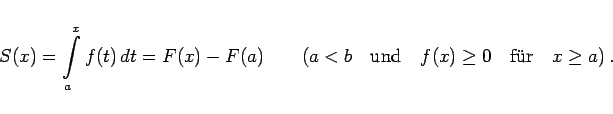
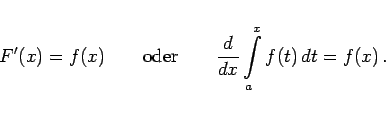

Inhalt Index DeskTop Bronstein

 Integralrechnung Bestimmte Integrale Grundbegriffe, Regeln und Sätze Eigenschaften bestimmter Integrale
Integralrechnung Bestimmte Integrale Grundbegriffe, Regeln und Sätze Eigenschaften bestimmter Integrale


In diesem Falle eines variablen Flächeninhalts spricht man von einer Flächenfunktion in der Form
|  | (8.41) |
Um Verwechslungen mit der variablen Integrationsgrenze x zu vermeiden, wird hier bei der Darstellung des Integranden die Integrationsvariable mit t bezeichnet.
|  | (8.42) |
Die geometrische Bedeutung dieses Satzes besteht darin, daß die Ableitung einer variablen Fläche A(x) gleich der variablen Endordinate NM ist (s. Abbildung):
Dabei sind sowohl die Fläche als auch die Ordinate gemäß Vorzeichenregel mit Vorzeichen zu nehmen.